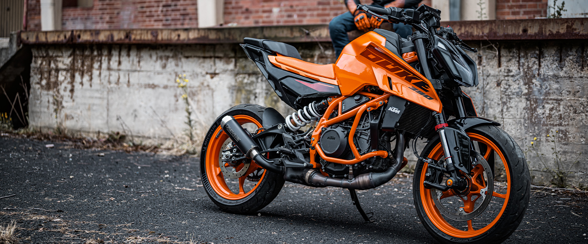

ALAPÁR: 2,385,900.00 HUF
A vadonatúj 2024-es KTM 390 DUKE-kal a körülötted lévő világ a te saját edzőtermeddé válik. Kivételes agilitást, könnyű kezelhetőséget és ütős teljesítményt hoz az utcára, ez a közepes súlyú bruiser készen áll arra, hogy bármilyen fordulatot vegyen. A legmodernebb vezetési segédeszközöket, teljesen új vázat, állítható felfüggesztést – és agresszív, új megjelenést – a 2024-es KTM 390 DUKE viseli az aszfalt felfaragásának koronáját.
A KTM 390 DUKE 43 mm-es WP APEX nyitott kazettás villája állítható tömörítéssel és visszapattanással könnyen megtalálhatja a tökéletes egyensúlyt kedvenc aszfaltcsíkjának megtámadásakor, vagy néhány szűk, kúppal jelölt sarkon való csúsztatáskor. A hátoldalon a WP APEX Separate dugattyús lengéscsillapító visszapattanásra és előfeszítésre is beállítható, hogy megtalálja az ideális keveréket a kényelem és a tapadás között.

Minden, amire szüksége van egy pillantással. A 2024-es KTM 390 DUKE vadonatúj 5"-es ragasztott üveg TFT-műszerfalat tartalmaz. Ez egy új kapcsolókockával párosul, amely 4 irányú menükapcsolókkal lehetővé teszi az összes járműfunkcióval való egyszerű interakciót – még az okostelefonok csatlakoztatását is. Ennek apropóján az összes Az új generációs DUKE modellek csatlakozási funkciókkal vannak felszerelve, amelyek lehetővé teszik a pilóták számára, hogy zenét játsszanak, fogadják a bejövő hívásokat, és a „Turn-by-Turn” segítségével elérjék a kívánt célt.
A NAKED vonalat felölelő 2024-es KTM 390 DUKE nem szégyell mindent elviselni. A mindig lenyűgöző árnyékot vető, cápaszerű élekkel és látható légbeömlőkkel borított KTM 390 DUKE agresszív kiállással büszkélkedhet. Új fém üzemanyagtartály, színes befecskendezésű műanyagok és külső LED helyzetjelző lámpák teszik teljessé a csomagot.

A 2024-es KTM 390 DUKE alapfelszereltsége a prémium megjelenés. A kiváló minőségű, többrétegű, nedvesre festett felület akár vadonatúj Elektronikus narancs, akár Atlantik kék, tiszta fényű grafikával tökéletesen kiemeli az egyedülálló DUKE texturált üléshuzatot. Tévedés ne essék, ez 100% DUKE 110% utcai hitelességgel.


Az LC4c motorok legújabb generációjával büszkélkedő 2024-es KTM 390 DUKE 399 köbcentiméteres kapacitással, nagyobb teljesítménnyel, egyenletesebb gyorsulással és könnyebb össztömeggel rendelkezik, mint korábban. A kismotoros játékban szerzett több éves tapasztalatból merítve a 2024-es KTM 390 DUKE továbbfejlesztett sebességváltóval és optimalizált hengerfejjel is rendelkezik, és készen áll az EURO5.2 kibocsátási szabványok elfogadására. Ó, és említettük, hogy KÉSZ a VERSENYRE?
A 2024-es KTM 390 DUKE a RIDE MÓDOK választékát kínálja pilótáinak, hogy minden körülmények között a legjobban megfeleljenek. Az alapkivitelben aktivált STREET mód felszabadítja a KTM 390 DUKE összes dühét, míg a RAIN mód egy kicsit jobban irányítja a dolgokat. a nedvesben. Mindkettő egyszerűen bekapcsolható a TFT kijelzőn keresztül.
Készüljön fel a vonalról való leszállásra, mert a 2024-es KTM 390 DUKE alapfelszereltségként fel van szerelve kilövésvezérléssel. Amikor a rendszer be van kapcsolva, a motor 7000 ford./percnél éri el a csúcsot tágra nyitott gáz mellett, megvárva, amíg a tengelykapcsoló leesik.
Minden 2024-es KTM DUKE modell elöl és hátul nagy teljesítményű LED-lámpákkal van felszerelve. Ezek nem csak akkor működnek, amikor a világ besötétedik, hanem jobb láthatóságot is biztosítanak forgalmas forgalom vagy ködös útviszonyok között.
A TRACK Screen az 5"-es TFT-kijelző grafikáját versenyközpontúbbá alakítja, megnöveli a fordulatszámmérőt, megjeleníti a köridőt, a kiválasztott fokozat kijelzőjét, csökkenti a sebességkijelzés méretét, és megjeleníti a lovassegítő beállításokat. Sőt, a TRACK Screen is lehetővé teszi a versenyzők számára az Indításvezérlés kezdeményezését.
| MOTOR | ALVÁZ | ||
|---|---|---|---|
| NYOMATÉK | 39 Nm | TENGELYTÁV | 1357 mm |
| SEBESSÉGVÁLTÓ | 6 sebességes | ABS | ABS Bosch 9,3 MP kétcsatornás (Supermoto ABS) |
| AKKUMULÁTOR KAPACITÁSA | 8 Ah | ELSŐ FÉKTÁRCSA ÁTMÉRŐ | 320 mm |
| HŰTÉS | Folyadékhűtés | HÁTSÓ FÉKTÁRCSA ÁTMÉRŐ | 240 mm |
| TELJESÍTMÉNY | 44.25 le | ELSŐ FÉK | Négydugattyús radiális fix féknyereg, féktárcsa |